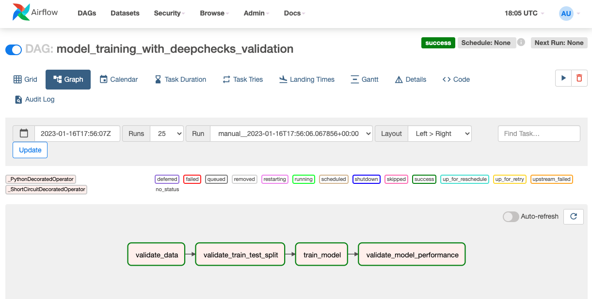
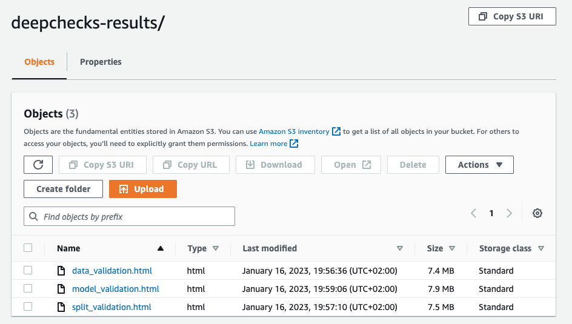

Using Deepchecks In CI/CD#
This guide will explain the basics of using CI/CD for machine learning, and demonstrate how deepchecks can be incorporated into the process, including code snippets that can be used for running deepchecks with Airflow or Github Actions.
Structure:
CI/CD In Machine Learning#
CI/CD is a software engineering concept that is used to streamline the process of building, testing and deploying software products. These can be made more trustworthy and efficient, and help improve the R&D processes, by adding automated steps to the development and deployment lifecycle. For ML models, CI/CD concepts can be utilized to streamline the process of model training (and retraining), data and model validation and model deployment:
- Data integrity validation: When the data used for training is collected via automatic processes and pipelines, the data may contain errors and problems we haven’t encountered before, either due to a bug in the data processing pipeline or due to a change in the data source.Examples of such problems include: conflicting labels between similar samples, high correlation between features, spelling errors in categorical features, and more.
- Datasets comparison: In many cases it’s useful to make sure that there isn’t any leakage or drift between two datasets. For example, when doing a time based split of the data there is a risk that the datasets will have significant differences, or when doing a periodic model retraining we might want to compare the new dataset to the previous one.Examples of checks that can be used are: drift between features, change in correlation between features and label, duplicate samples between the datasets, and more.
Model training: To automate the model’s training on a new (preferrably validated) training dataset.
Model validation: The trained model is evaluated on test data, testing for performance, weak segments and more sophisticated checks such as performance compared to naive model, calibration score for each class, etc.
Model deployment: The model is deployed to production if it meets the specified criteria.
In most cases, the steps above are done manually today by running local tests, and inspecting graphs and reports. By using CI/CD these time consuming tasks can be automated, freeing up time for more meaningful work.
Deepchecks can be used in the CI/CD process at 2 main steps of model development:
Before model training, to validate the integrity of the data used for training, and check for any data drift or leakage between the train and test datasets.
After model training, testing model performance across different metrics and data segments, and to gain deeper insights on the model’s behavior, such as weak segments and performance bias.
In this guide we will show end to end examples of validating both the data and the trained model. In most use cases those processes will be separated into two separate pipelines, one for data validation and one for model validation. We will use the default suites provided by deepchecks, but it’s possible to create a custom suite containing hand chosen checks and conditions in order to cater to the specific needs of the project.
Airflow Integration#
Airflow Quickstart#
Apache Airflow is an open-source workflow management system which is commonly used to automate data processing pipelines.
If you are new to Airflow, you can get it up and running quickly with the following simplified steps:
Run
pip install apache-airflowRun
airflow standalone. This will bootstrap a local Airflow deployment which is good for testing, but not intended for productionUnder your home directory, insert your DAG (python file) inside the directory
~/airflow/dags
For a more elaborate explanation about installing and operating airflow see their docs.
Airflow With Deepchecks#
In the following example we will use S3 object storage to load the training data and to store our suite results. We define the first 2 tasks as short circuit tasks, which means the rest of the downstream tasks will be skipped if the return value of them is false. This is useful in cases where we want to stop the pipeline if the data validation failed. We can also add an additional step of deploying the model after the last validation has passed.
from datetime import datetime
import joblib
import pandas as pd
from airflow.decorators import dag, task, short_circuit_task
from airflow.providers.amazon.aws.hooks.s3 import S3Hook
@dag(dag_id='model_training_with_deepchecks_validation',
schedule_interval=None,
default_args={
'owner': 'airflow',
'start_date': datetime(2023, 1, 1),
},
params={
'bucket': 'deepchecks-public',
'data_key': 'data.csv',
'train_path': 'train.csv',
'test_path': 'test.csv',
'model_path': 'model.joblib'
},
catchup=False)
def model_training_dag():
@short_circuit_task
def validate_data(**context):
from deepchecks.tabular.suites import data_integrity
from deepchecks.tabular import Dataset
hook = S3Hook('aws_connection')
file_name = hook.download_file(key=context['params']['data_key'], bucket_name=context['params']['bucket'],
local_path='.')
data_df = pd.read_csv(file_name)
dataset = Dataset(data_df, label='label', cat_features=[])
suite_result = data_integrity().run(dataset)
suite_result.save_as_html('data_validation.html')
hook.load_file(
filename='data_validation.html',
key='results/data_validation.html',
bucket_name=context['params']['bucket'],
replace=True
)
context['ti'].xcom_push(key='data', value=file_name)
return suite_result.passed()
@short_circuit_task
def validate_train_test_split(**context):
from deepchecks.tabular.suites import train_test_validation
from deepchecks.tabular import Dataset
data = pd.read_csv(context['ti'].xcom_pull(key='data'))
train_df, test_df = data.iloc[:len(data) // 2], data.iloc[len(data) // 2:]
train_df.to_csv(context['params']['train_path'])
test_df.to_csv(context['params']['test_path'])
train = Dataset(train_df, label='label', cat_features=[])
test = Dataset(test_df, label='label', cat_features=[])
suite_result = train_test_validation().run(train_dataset=train, test_dataset=test)
suite_result.save_as_html('split_validation.html')
hook = S3Hook('aws_connection')
hook.load_file(
filename='split_validation.html',
key='results/split_validation.html',
bucket_name=context['params']['bucket'],
replace=True
)
return suite_result.passed()
@task
def train_model(**context):
train_df = pd.read_csv(context['params']['train_path'])
# Train model and upload to s3
model = ...
joblib.dump(model, context['params']['model_path'])
hook = S3Hook('aws_connection')
hook.load_file(
filename=context['params']['model_path'],
key='results/model.joblib',
bucket_name=context['params']['bucket'],
replace=True
)
@task
def validate_model_performance(**context):
from deepchecks.tabular.suites import model_evaluation
from deepchecks.tabular import Dataset
train_df = pd.read_csv(context['params']['train_path'])
test_df = pd.read_csv(context['params']['test_path'])
model = joblib.load(context['params']['model_path'])
train = Dataset(train_df, label='label', cat_features=[])
test = Dataset(test_df, label='label', cat_features=[])
suite_result = model_evaluation().run(train_dataset=train, test_dataset=test, model=model)
suite_result.save_as_html('model_validation.html')
hook = S3Hook('aws_connection')
hook.load_file(
filename='model_validation.html',
key='results/model_validation.html',
bucket_name=context['params']['bucket'],
replace=True
)
return suite_result.passed()
validate_data() >> validate_train_test_split() >> train_model() >> validate_model_performance()
model_training_dag()
We can access the result of the pipeline in our S3 bucket:
GitHub Actions Integration#
GitHub Actions Quickstart#
GitHub Actions is a service that allows you to run automated workflows, which can be triggered by events such as pushing to a repository or creating a pull request.
If you are new to GitHub Actions, you can get it up and running quickly with those simplified steps:
Have your project repository in
github.comAdd the python files with your ci/cd logic to the repository
Add the yaml below in .github/workflows directory and push to github
For a more elaborate explanation about working with GitHub Actions see their docs.
GitHub Actions With Deepchecks#
We will use the same functions as defined in airflow above with slight changes, and run them in the GitHub Actions
steps on every push to the main branch. Note that we might want to stop the pipeline when a suite fails.
In this case we can change the methods return types from return suite_result.passed() to:
if not suite_result.passed():
sys.exit(1)
The yaml file for the GitHub Actions workflow is as follows:
name: Model Training and Validation
on:
push:
branches: [ main ]
pull_request:
branches: [ main ]
jobs:
build:
runs-on: ubuntu-latest
steps:
- name: Checkout Repository
uses: actions/checkout@v3
- name: Set up Python 3.8
uses: actions/setup-python@v2
with:
python-version: 3.8
- name: Install dependencies
run: |
python -m pip install --upgrade pip
pip install deepchecks
- name: Validate Data
run: |
python validate_data.py
- name: Validate Train-Test Split
run: |
python validate_train_test_split.py
- name: Train Model
run: |
python train_model.py
- name: Validate Model Performance
run: |
python validate_model_performance.py
- name: Archive Deepchecks Results
uses: actions/upload-artifact@v3
# Always run this step even if previous step failed
run: always()
with:
name: deepchecks results
path: *_validation.html